Scendi nel dungeon. Tira i dadi. Scopri cosa si nasconde oltre la Porta Runata. Un dungeon crawler a turni per Mac e iPad, con una campagna che vale la pena di finire.
Descend into the dungeon. Roll the dice. Find out what lies beyond the Runed Gate. A turn-based dungeon crawler for Mac and iPad, with a campaign worth finishing.
Dungeon Legacy porta al tavolo digitale il sapore dei classici dungeon crawler: stanze da esplorare, porte chiuse e segrete, mostri da affrontare uno contro uno e un bottino da spendere con giudizio.
Dungeon Legacy brings the flavour of classic dungeon crawlers to a digital table: rooms to explore, locked and secret doors, monsters to face one on one, and loot to spend wisely.
Stanze generate a ogni spedizione, porte chiuse e segrete, ricerca illimitata: non resti mai bloccato.
Rooms generated for every expedition, locked and secret doors, unlimited searching: you never get stuck.
Attacco e difesa si risolvono dado contro dado, con turni alternati e retroguardia da proteggere.
Attack and defence are resolved die against die, with alternating turns and a rear guard to protect.
Armi, armature, scudi e pozioni. L'oro si condivide tra gli eroi e si spende alla Bottega tra una spedizione e l'altra.
Weapons, armour, shields and potions. Gold is shared between heroes and spent at the Shop between expeditions.
Missioni a mappa fissa con personaggi, dialoghi e boss, nella Campagna Fondativa in dieci missioni.
Fixed-map missions with characters, dialogue and bosses, in the ten-mission Foundational Campaign.
Tutto il gioco è tradotto in entrambe le lingue, con tre temi grafici tra cui scegliere.
The whole game is translated into both languages, with three visual themes to choose from.
Niente account, niente pubblicità, niente analytics. I tuoi salvataggi restano sul tuo dispositivo.
No account, no ads, no analytics. Your saves stay on your device.
Scegli chi scende nel dungeon. Ogni eroe ha un ruolo preciso: da solo sopravvive chi è audace, in gruppo si vince.
Choose who goes down into the dungeon. Every hero has a clear role: alone only the bold survive, together you win.
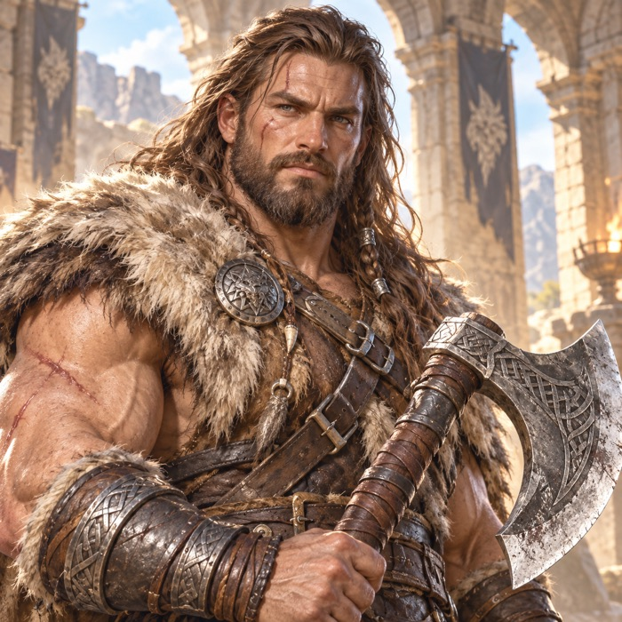
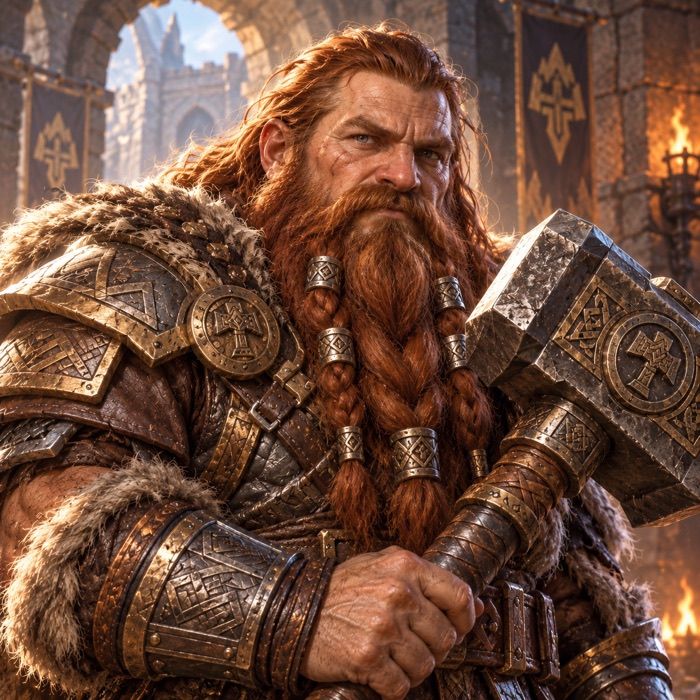
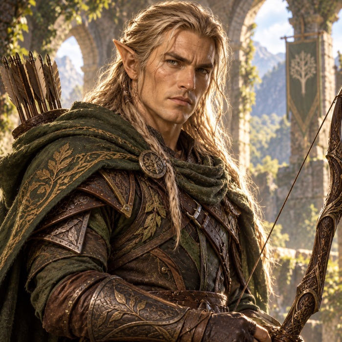
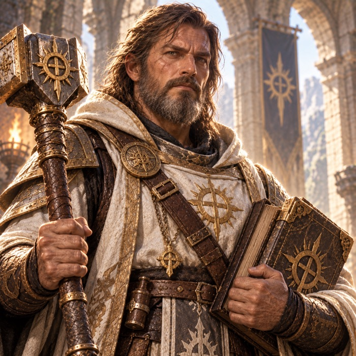
Un prologo e dieci missioni: villaggi in rovina, guardiani che non dormono, una Bruma che sogna e una Porta che non doveva riaprirsi.
A prologue and ten missions: ruined villages, guardians who never sleep, a Mist that dreams and a Gate that was never meant to reopen.
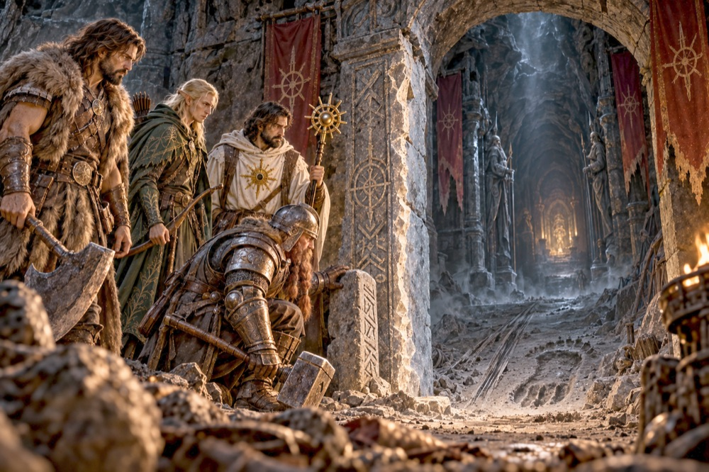
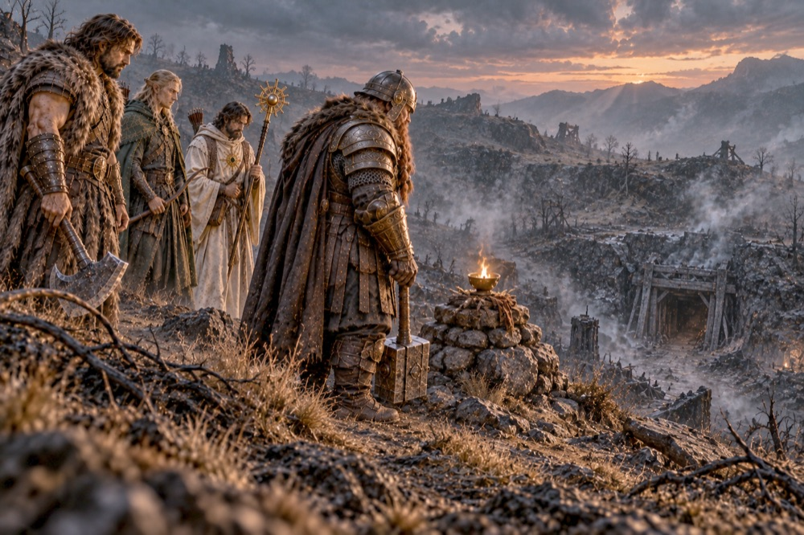
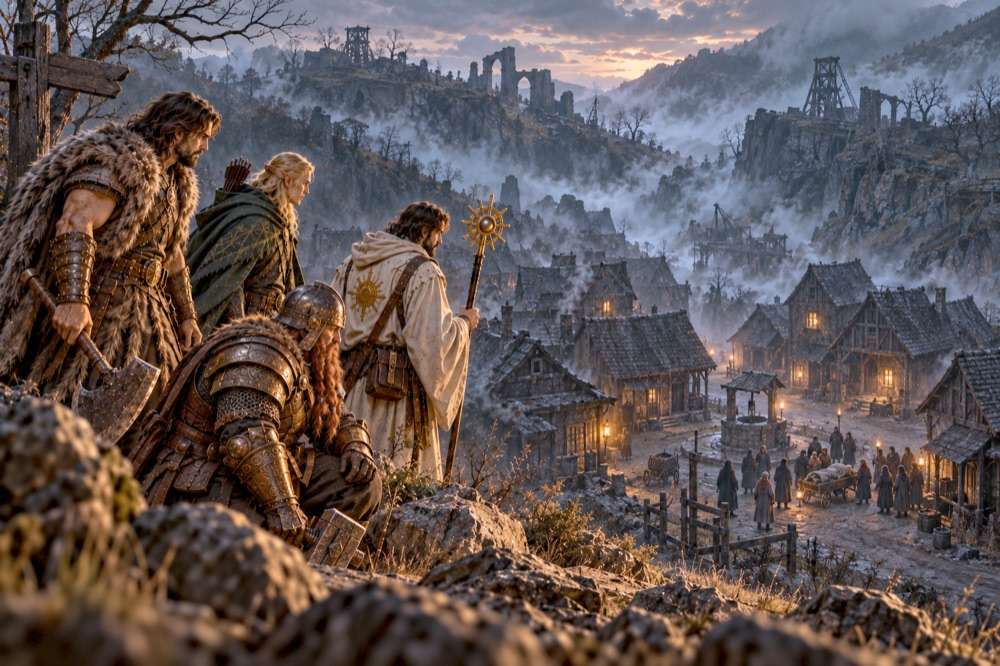
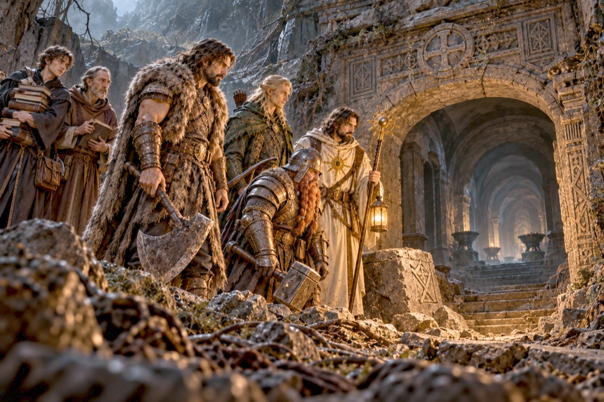
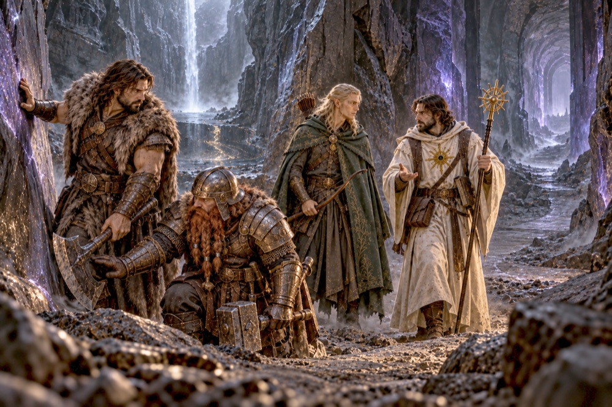
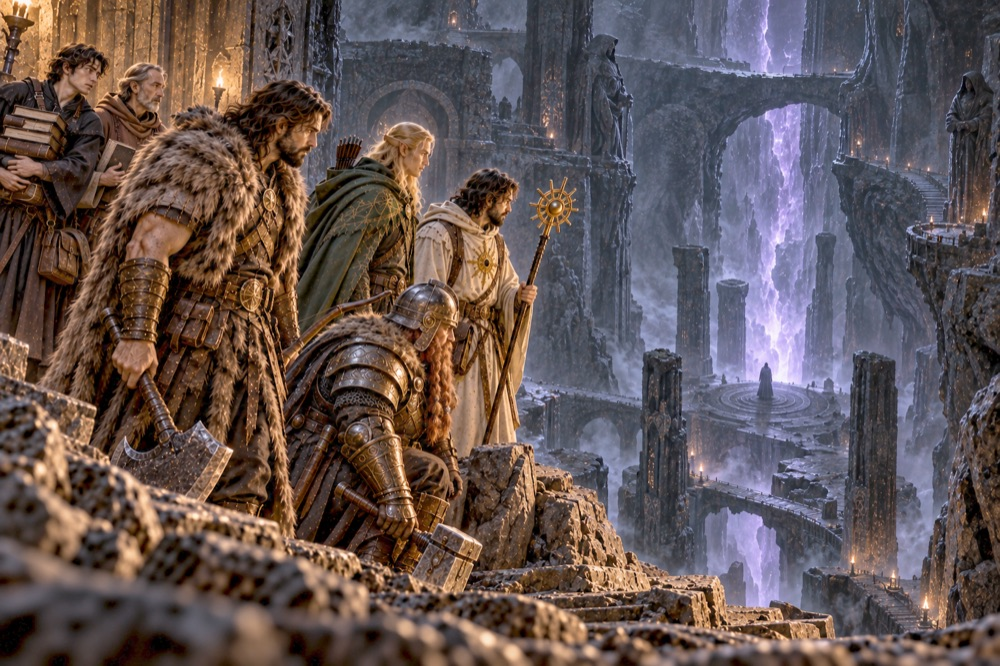
Prova la prima missione gratis. Se ti conquista, un unico acquisto sblocca il gioco completo per sempre, con la Condivisione in famiglia di Apple.
Try the first mission for free. If it wins you over, a single purchase unlocks the full game forever, with Apple Family Sharing.
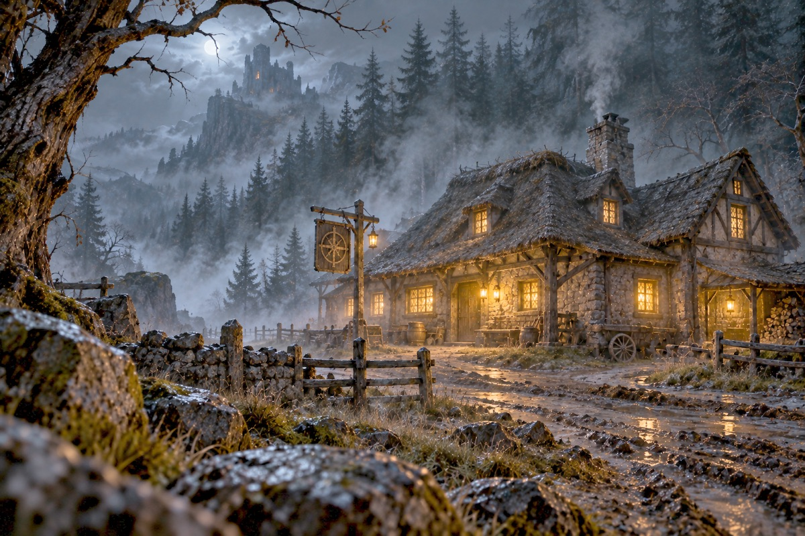